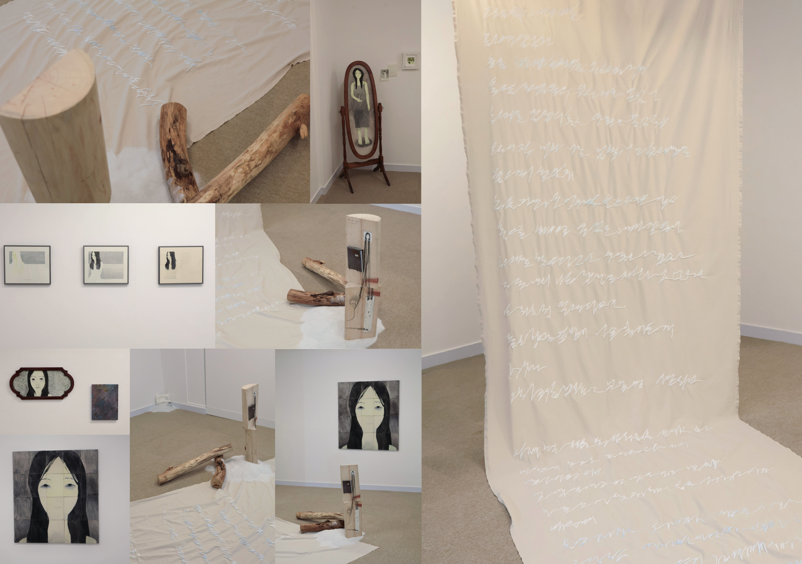

artworks

닿지 않을 너에게, 아니 나에게
오래 전, 너와 나는 무언가를
좇으며 살았지.
눈을 감으면
언제든 길고긴 수평선
속으로 빠져들 수 있을 거라 믿었어.
오래 전, 너와 나는 물결의
그림자만을 좇으며 살았지.
눈을 감으면 언제든
부드러운 어둠 속으로
빠져들 수 있을 거라 믿었어.
하지만 발밑의 흙은 생각보다 깊었고,
그 속에서 나는 뿌리를 내려고 있었다는
걸 뒤늦게 알게 되었어.
물을 향한 갈증이
나를 묶어둔 게 아니라,
오히려 잡아주고 있었다는 사실처럼.
이제 나는 파도를 향해 몸을 던지기보다,
내 안에 흐르는 물기를 더듬으며 살아가려 해.
잎맥 속에 고여 있는 작은 빛처럼,
나 또한 이 땅 위에서 숨을 쉬고, 언어를 배우며,
옷감 사이로 스며드는 바람을 느낀다.
그리움은 여전히 사라지지 않지만,
그것이 나를 다시 길 위에 세우기에.
언젠가 네가 바라보던 바다가,
우리가 걸어온 발자국 끝에서
조용히 열리기를 바라면서.
届かない君へ、いや私へ。
昔、君と私はなにかを
追いかけながら生きてきた。
目を閉じれば
いつでも長い水平線の彼方へ
溶け込めると信じていた。
昔、君と私は波の影だけを
追いながら生きてきた。
目を閉じればいつでも
柔らかな闇の中へ
沈み込めると信じていた。
しかし、足元の土は
思っていたよりも深く、
その中で私は根を
下ろそうとしていたのだと、
後になって知った。
水への渇きが私を
縛っていたのではなく、
むしろ引き留めてくれていたのだ
という事実のように。
これから私は波に向かって
身を投げるよりも、
私の中に漂う水の気配を
手探りしながら生きていこうと思う。
葉脈の中に宿る小さな光のように、
私もこの地の上で息をし、言葉を学び、
布の隙間を吹き抜ける風を感じる。
懐かしさは今も消えない。
けれど、それが私を再び道の上に
立たせてくれるから。
いつか君が眺めていた海が、
私たちが歩んできた足跡の先で、
静かに開かれますように。
spatial design
전시 사진 — 추가 예정
전시 사진
전시 사진
작품 설명 — 추가 예정
about & archive
프로필 사진
텍스트 — 추가 예정